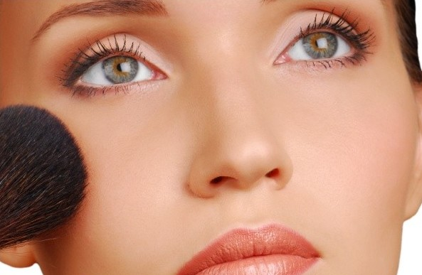

Make Up Natural
Make up merupakan alat kecantikan yang selalu di bawa wanita ke mana saja. Dengan memakai make up, seorang wanita akan terlihat lebih cantik, anggun dan menawan. Bagi seorang wanita make up adalah salah satu kebutuhan alami, yang dapat merubah penampilan dan dapat menambah rasa percaya diri dalam hal penampilan. Karena make up dapat merubah seseorang dari biasa menjadi luar biasa. Sebenarnya cara memakai make up sangat mudah, baik itu cara make up natural ataupun cara make up minimalis. Semuanya tergantung bagaimana cara kita mengaplikasikan make up tersebut dengan benar dan pas

Cara mengaplikasikan make up terdiri dari beberapa cara, yaitu cara make up natural, minimalis, glamour, gotic dan sebagainya. Semua cara tersebut tergantung dengan situasi dan keadaan di mana anda akan mengaplikasikannya. Jika hanya jalan-jalan biasa atau hanya untuk acara santai, anda dapat mencoba untuk mengaplikasikan make up natural. Selain mudah mengaplikasikannya, anda juga akan terlihat lebih cantik alami. Bagi yang ingin mencoba mengaplikasikan make up natural, silahkan simak dalam artikel di bawah ini :
Tips Menggunakan Make Up Natural :
- Pastikan terlebih dahulu untuk membersihkan kulit wajah sebelum memakai make up. Setelah itu pakailah pelembab yang ringan dan cocok dengan warna dan jenis kulit anda.
- Pakailah foundation yang sesuai dengan warna kulit. Anda juga bisa mencoba dengan mencampurkan 2 atau 3 warna untuk menyamarkan dengan warna kulit yang anda miliki agar telihat lebih natural dan alami.
- Pakailah kuas untuk memakai bedak padat atau bedak tabur, agar bedak dapat menutup wajah anda dengan sempurna dan tetap terlihat ringan.
- Setelah selesai memakai bedak dan foundatin, saatnya untuk memakai eye shadow dengan warna lembut dan natural. Bagi yang memiliki kulit putih sebaiknya memakai warna-warna terang, agar kulit anda tidak terlihat pucat seperti warna biru, hijau dan ungu. Sedangkan bagi yang memiliki kulit kuning langsat dapat memakai warna emas dan coklat. Terakhir bagi pemilik kulit sawo matang dapat memakai eye shadow dengan warna gelap dan matalik, agar kulit anda terlihat bercahaya dan segar, seperti warna emas, coklat, hijau tua dan biru tua.
- Gunakan eye brow atau pensil alis agar terlihat lebih hidup. Anda dapat memakainya dengan menekan pelan-pelan dari bagian ujung dalam alis hingga ke bagian luar dari batas alis.
- Eyeliner dapat membantu untuk memperindah kelopak alis anda. Maka aplikasikan eyeliner berwarba coklat atau abu-abu agar terlihat natural, atau anda juga dapat mengaplikasikan eyeliner berwaba hitam agar mata terlihat lebih besar dan indah. Aplikasikan dengan menarik garis mulai ujung mata dari bagian dalam hingga mengarah keluar dengan hati-hati.
- Jepitlah bulu mata terlebih dahulu sebelum memakai maskara. Setelah itu aplikasikan maskara dengan 1 sapuan saja agar terkesan natural, kemudian sisir bulu mata anda agar tidak terlihat tebal dan mengumpal.
- Pakailah lipstik dengan warna natural atau 1 tingkat diatas warna bibir anda. Untuk kulit putih dan kuning langsat dapat mengaplikasikan lipstik dengan warna cerah, seperti pink dan oranye. Sedangkan bagi yang memiliki kulit sedikit gelap cocok sekali memakai lipstik berwarna coklat bersemu oranye.
- Langkah terakhir untuk make up natural adalah dengan memakai blush on dengan warna natural, seperti warna merah muda, oranye dan peach. Aplikasikan blush on agar terlihat seperti gambaran ekspresi anda. Arahkan blush on mulai dari tulang pipi hingga bagia telinga dalamagar telihat lbih segar dan fresh.
Demikian artikel kali ini mengenai cara memakai make up natural. Semoga artikel ini bermanfaat dan selamat mencoba mengaplikasikan make up natural di rumah. Pancarkan cantikmu melalui make up natural yang cantik dan menawan.